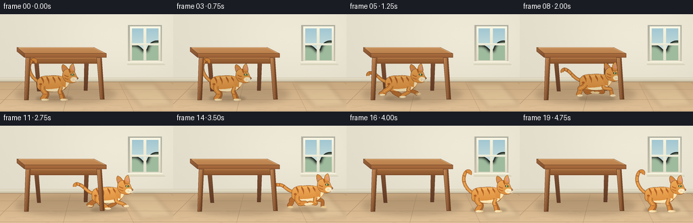
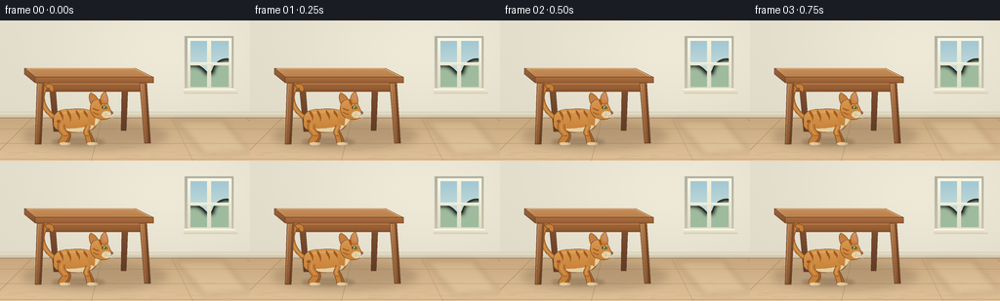

CODING AGENTS AS PIXEL WORLD MODELS
traex/GPT-6.1-Sol · dynamic_spatial_relationship_0016
点击播放 · 原生 RGB 像素
逐轮保存的候选
回放视频、检查图与代码变化。
每份候选均可单独播放。实际图片检查记录在下方工具轨迹中。
候选 01播放与检查图
点击播放 · 原生 RGB 像素


展开代码变化
--- 上一保存版本
+++ 本次保存版本
@@ -0,0 +1,229 @@
+from pathlib import Path
+import json, math
+import numpy as np
+from PIL import Image, ImageDraw, ImageFilter
+import artifact_io
+
+ROOT = Path(__file__).resolve().parent
+SPEC = json.loads((ROOT / 'task_spec.json').read_text())
+W,H = SPEC['width'],SPEC['height']
+S=4
+rng=np.random.default_rng(731)
+
+def pt(p): return tuple(round(v*S) for v in p)
+def poly(im, p, color): ImageDraw.Draw(im).polygon([pt(v) for v in p],fill=color)
+def ellipse(im, b, color): ImageDraw.Draw(im).ellipse(tuple(round(v*S) for v in b),fill=color)
+def line(im, points, color, width=1):
+ ImageDraw.Draw(im).line([pt(v) for v in points], fill=color, width=max(1,round(width*S)), joint='curve')
+def curve_points(start, segments):
+ out=[start]; p=start
+ for a,b,c in segments:
+ for t in np.linspace(0,1,20)[1:]:
+ u=1-t
+ out.append((u**3*p[0]+3*u*u*t*a[0]+3*u*t*t*b[0]+t**3*c[0],u**3*p[1]+3*u*u*t*a[1]+3*u*t*t*b[1]+t**3*c[1]))
+ p=c
+ return out
+
+def shape(im, points, color, bottom=None, outline=None, width=.35):
+ if bottom:
+ mask=Image.new('L',im.size); poly(mask,points,255)
+ ymin=min(p[1] for p in points); ymax=max(p[1] for p in points)
+ yy=np.arange(im.height)/(S)
+ a=np.clip((yy-ymin)/max(.001,ymax-ymin),0,1)
+ colors=np.array(color)[None,:]*(1-a[:,None])+np.array(bottom)[None,:]*a[:,None]
+ grad=np.broadcast_to(colors[:,None,:],(im.height,im.width,3)).astype('uint8')
+ im.paste(Image.fromarray(grad), (0,0),mask)
+ else: poly(im,points,color)
+ if outline: line(im,points+[points[0]],outline,width)
+
+def path(im,start,segments,color,bottom=None,outline=None,width=.35):
+ shape(im,curve_points(start,segments),color,bottom,outline,width)
+
+def wood_leg(im, p, dark=False):
+ shape(im,p,(132,83,50) if dark else (182,124,76),(96,59,38) if dark else (134,83,47), (98,63,43),.5)
+ if not dark:
+ line(im,[(p[0][0]+1,p[0][1]+1),(p[-1][0]+.8,p[-1][1]-1)],(207,150,95),.6)
+ for i in [2.1,3.9]:
+ line(im,[(p[0][0]+i,p[0][1]+7),(p[-1][0]+i*.4,p[-1][1]-1)],(147,95,56),.25)
+
+# Quiet, naturally lit room; all surfaces are generated procedurally.
+y,x=np.mgrid[0:H*S,0:W*S]/S
+wall=np.empty((H*S,W*S,3),float)
+base=np.array([226.,220.,203.])
+light=np.exp(-((x-175)/119)**2-((y-35)/76)**2)
+for c in range(3): wall[:,:,c]=base[c]+light*13-(y/H)*3
+noise=rng.normal(0,.42,(H*S,W*S))
+wall+=noise[:,:,None]
+room=Image.fromarray(np.clip(wall,0,255).astype('uint8'))
+# skirting board and honey-colored floor
+shape(room,[(0,98),(256,98),(256,144),(0,144)],(198,166,125),(224,193,152))
+shape(room,[(0,94),(256,94),(256,100),(0,100)],(234,228,207),(199,188,161))
+line(room,[(0,94),(256,94)],(211,200,174),.7)
+line(room,[(0,100),(256,100)],(159,132,101),.7)
+for v in [-130,-47,32,104,176,253,333,420]:
+ end=128+(v-128)*1.45
+ line(room,[(v,101),(end,144)],(171,140,104),.55)
+for yy in [111,126,142]:
+ line(room,[(0,yy),(256,yy)],(183,152,115),.45)
+# subtle wood-grain streaks, deterministic throughout video
+for _ in range(100):
+ xx=rng.uniform(0,256); yy=rng.uniform(101,144); ll=rng.uniform(3,21)
+ line(room,[(xx,yy),(xx+ll,yy+.15)],(201,170,131),.2)
+# Window frame on right wall
+shape(room,[(189,16),(239,16),(239,75),(189,75)],(175,175,160),(201,195,174))
+shape(room,[(192,18),(237,18),(237,72),(192,72)],(251,248,229),(223,217,194))
+shape(room,[(195,21),(234,21),(234,68),(195,68)],(162,199,210),(217,232,224))
+# distant softly colored foliage outside the window
+out=Image.new('RGB',room.size,(0,0,0)); omask=Image.new('L',room.size)
+poly(omask,[(195,21),(234,21),(234,68),(195,68)],255)
+for xx,yy,rr in [(197,62,15),(232,54,13),(216,70,15),(202,72,16),(236,71,10)]:
+ ellipse(out,(xx-rr,yy-rr,xx+rr,yy+rr),(159,187,158))
+out=out.filter(ImageFilter.GaussianBlur(2*S))
+# use only foliage region, retaining sky above
+mask=np.array(omask); arr=np.array(out)
+mask[(arr.sum(axis=2)<70)]=0
+room.paste(out,(0,0),Image.fromarray(mask))
+shape(room,[(212,20),(216,20),(216,70),(212,70)],(246,243,221),(224,223,203))
+shape(room,[(194,43),(235,43),(235,46),(194,46)],(245,244,224),(225,225,205))
+shape(room,[(188,70),(240,70),(244,75),(188,75)],(248,245,224),(210,204,180))
+line(room,[(189,70),(239,70)],(255,252,236),.8)
+# translucent daylight on the floor
+sun=Image.new('RGBA',room.size)
+poly(sun,[(179,102),(228,102),(256,135),(210,138)],(255,244,198,38))
+sun=sun.filter(ImageFilter.GaussianBlur(3*S))
+room=Image.alpha_composite(room.convert('RGBA'),sun).convert('RGB')
+# Table's soft grounding shadow
+shadow=Image.new('RGBA',room.size)
+ellipse(shadow,(23,105,171,132),(73,54,36,48))
+shadow=shadow.filter(ImageFilter.GaussianBlur(4*S))
+room=Image.alpha_composite(room.convert('RGBA'),shadow).convert('RGB')
+# table rear legs and front-independent carcass
+wood_leg(room,[(50,62),(56,62),(60,114),(55,114)],True)
+wood_leg(room,[(125,60),(131,60),(129,113),(124,113)],True)
+# perspective tabletop, wide enough to establish the under-relation
+shape(room,[(25,49),(139,49),(157,58),(36,58)],(202,149,97),(187,128,76),(120,77,46),.55)
+# fine long wood grain and end grain on its surface
+for i in range(9):
+ yy=50+i*.8
+ line(room,[(29+(yy-49)*1.5,yy),(139+(yy-49)*1.55,yy)],(179+int(i%3)*6,123+int(i%3)*4,73),.25)
+line(room,[(28,49.5),(138,49.5),(154,57.5)],(232,183,126),.8)
+shape(room,[(36,58),(157,58),(157,64),(36,64)],(171,111,63),(150,92,51),(115,71,42),.4)
+shape(room,[(25,49),(36,58),(36,64),(25,55)],(159,104,61),(124,78,46),(109,68,43),.4)
+shape(room,[(39,64),(150,64),(150,73),(39,73)],(162,105,59),(138,85,45))
+line(room,[(40,65),(150,65)],(191,130,75),.65)
+line(room,[(40,72),(150,72)],(110,66,36),.6)
+
+
+def cat(im, cx,cy, phase, running, settle=0):
+ # The subject is a single warm orange tabby, always facing right.
+ shade=1-.095*np.clip((157-cx)/40,0,1)
+ def C(c): return tuple(int(v*shade) for v in c)
+ fur=C((219,141,61)); lightfur=C((239,171,87)); dark=C((180,98,39)); edge=C((126,73,36)); cream=C((252,230,182))
+ def T(p): return (cx+p[0],cy+p[1])
+ def E(b,col): ellipse(im,(cx+b[0],cy+b[1],cx+b[2],cy+b[3]),col)
+ def P(start,segs,col,bottom=None,outline=None,w=.35):
+ path(im,T(start),[tuple(T(p) for p in seg) for seg in segs],col,bottom,outline,w)
+ def L(p,col,w): line(im,[T(v) for v in p],col,w)
+ # Expressive, smoothly bending tail. Extended backward during the run.
+ if running:
+ tip=(-45,-16+3*math.sin(phase+.5))
+ tail=curve_points((-22,-3),[((-32,-4),(-36,-15),tip),((tip[0]-3,tip[1]-1),(tip[0]-6,tip[1]+1),(tip[0]-5,tip[1]+4))])
+ else:
+ tail=curve_points((-22,-3),[((-33,-9),(-39,-22),(-34,-32)),((-32,-38),(-24,-37),(-27,-31))])
+ L(tail,edge,5.0); L(tail,fur,4.1)
+ L(tail[:20],lightfur,1.0)
+ for k in [12,17,23]:
+ a=tail[min(k,len(tail)-2)]; b=tail[min(k+1,len(tail)-1)]
+ ang=math.atan2(b[1]-a[1],b[0]-a[0])+math.pi/2
+ L([(a[0]-1.7*math.cos(ang),a[1]-1.7*math.sin(ang)),(a[0]+1.7*math.cos(ang),a[1]+1.7*math.sin(ang))],dark,1.25)
+ # articulated legs, two far legs first and two near legs after the torso
+ def leg(front,far):
+ hip=(11 if front else -16,5 if front else 3)
+ if not running:
+ knee=(hip[0]+(-1 if front else 4)+(2 if far else 0),14)
+ ankle=(hip[0]+(1 if front else 0)+(3 if far else 0),23)
+ else:
+ ph=phase+(math.pi if far else 0)+(1.4 if front else 0)
+ swing=math.cos(ph)
+ knee=(hip[0]+(5 if front else -3)+8*swing,12+2*math.sin(ph))
+ ankle=(hip[0]+17*swing,19-6*max(0,math.sin(ph)))
+ co=C((182,110,48)) if far else fur
+ # Curved fleshy thigh and narrower hock; feet are not disconnected.
+ pts=curve_points(hip,[((hip[0]-2,hip[1]+6),(knee[0]-2,knee[1]-3),knee),((knee[0]+1,knee[1]+3),(ankle[0],ankle[1]-3),ankle)])
+ L(pts,edge,5.4 if front else 7.2)
+ L(pts,co,4.5 if front else 6.3)
+ if not far: L(pts[:20],lightfur,1.2)
+ E((ankle[0]-2.0,ankle[1]-1,ankle[0]+6,ankle[1]+2.0),C((232,201,145)) if far else cream)
+ if not far:
+ for z in [2,3.9]: L([(ankle[0]+z,ankle[1]+.5),(ankle[0]+z,ankle[1]+1.7)],C((184,143,90)),.3)
+ # tabby stripe on lower leg
+ mid=pts[21]
+ L([(mid[0]-1.8,mid[1]),(mid[0]+1.8,mid[1]+.4)],dark,1.1)
+ leg(False,True);leg(True,True)
+ # rounded back, haunch and belly, lean athletic silhouette
+ P((-24,1),[((-26,-8),(-18,-13),(-8,-12)),((1,-13),(13,-13),(18,-8)),((24,-3),(21,5),(15,9)),((2,13),(-11,12),(-18,10)),((-23,9),(-25,5),(-24,1))],lightfur,fur,edge,.5)
+ P((-13,8),[((-4,8),(10,7),(18,3)),((18,7),(12,11),(4,11)),((-3,12),(-10,11),(-13,8))],cream)
+ # contour highlight along the back
+ P((-20,-6),[((-13,-11),(2,-11),(12,-9)),((2,-9),(-13,-8),(-20,-6))],C((244,181,97)))
+ # tapered dark tabby stripes flow over the volume
+ for xx,sz in [(-16,9),(-8,10),(1,8),(9,6)]:
+ P((xx-2,-11),[((xx,-9),(xx+3,-6),(xx+1,sz-9)),((xx+1,-5),(xx-4,-8),(xx-2,-11))],dark)
+ E((-21,-1,-17,2),dark)
+ leg(False,False);leg(True,False)
+ # neck bridges head to chest
+ P((11,-6),[((12,-15),(17,-19),(21,-17)),((27,-11),(27,-2),(19,5)),((13,5),(9,0),(11,-6))],lightfur,fur)
+ P((22,-10),[((25,-8),(24,1),(18,5)),((18,0),(19,-7),(22,-10))],cream)
+ # rear ear triangular, forward ear triangular; both part of the head
+ P((15,-15),[((11,-23),(12,-28),(14,-29)),((19,-27),(22,-22),(23,-17)),((20,-14),(17,-14),(15,-15))],fur,fur,edge,.45)
+ P((14,-25),[((15,-24),(19,-20),(19,-18)),((16,-18),(14,-22),(14,-25))],C((207,139,121)))
+ # rounded head and pronounced feline muzzle facing right
+ P((14,-17),[((16,-23),(25,-24),(30,-19)),((33,-16),(33,-12),(35,-10)),((37,-9),(37,-7),(34,-6)),((34,-2),(28,0),(22,-2)),((16,-3),(12,-10),(14,-17))],lightfur,fur,edge,.45)
+ P((24,-20),[((23,-26),(27,-30),(29,-30)),((31,-25),(32,-21),(31,-18)),((28,-16),(25,-17),(24,-20))],lightfur,fur,edge,.45)
+ P((27,-21),[((27,-24),(28,-27),(29,-27)),((30,-25),(30,-22),(30,-20)),((29,-21),(28,-21),(27,-21))],C((226,153,132)))
+ # forehead stripes and cheek marking
+ P((22,-22),[((22,-19),(24,-16),(25,-15)),((25,-18),(25,-20),(24,-22))],dark)
+ L([(16,-13),(20,-11),(22,-11)],dark,1.15)
+ L([(16,-9),(20,-7),(22,-7)],dark,1.0)
+ # white cheek, lower jaw and nose leather
+ E((25,-10,35,-3),cream)
+ E((29,-8,36,-4),C((255,239,203)))
+ # single near eye in right profile, green iris and a crisp dark pupil
+ P((25,-14),[((27,-16),(30,-16),(31,-13)),((29,-11),(26,-11),(25,-14))],C((78,65,36)),None,edge,.3)
+ E((26.5,-15,30,-11.6),C((170,191,94)))
+ E((28.1,-14.9,29.1,-11.9),(37,42,30))
+ E((27.2,-14.8,28.2,-13.7),(255,254,235))
+ poly(im,[T((34,-9)),T((37,-8.6)),T((35.1,-6.9))],C((135,80,72)))
+ L([(35,-6.9),(34.5,-5.4),(32.2,-5)],C((112,72,48)),.45)
+ # nostril and short muzzle whiskers
+ E((34.8,-8.5,35.7,-7.9),C((79,55,43)))
+ for a,b in [((29,-7),(40,-9)),((29,-6),(40,-5)),((28,-5.2),(37,-2.7))]:
+ L([a,b],C((245,228,195)),.33)
+ for xx,yy in [(29,-7.3),(30.4,-6.3),(28.8,-5.7)]: E((xx,yy,xx+.55,yy+.55),C((159,114,72)))
+
+frames=[]
+for i in range(SPEC['frames']):
+ t=i/SPEC['fps']
+ u=np.clip((t-1.0)/3.0,0,1)
+ progress=u*u*(3-2*u)
+ cx=79+130*progress
+ running=1.0<t<4.0
+ phase=(t-1)*2*math.pi*1.65
+ cy=103-(2.3*(.5+.5*math.sin(phase*2))) if running else 103
+ im=room.copy()
+ sh=Image.new('RGBA',im.size)
+ ellipse(sh,(cx-26,121,cx+28,128),(70,47,25,65))
+ ellipse(sh,(cx-15,123,cx+20,127),(70,45,25,43))
+ sh=sh.filter(ImageFilter.GaussianBlur(1.6*S))
+ im=Image.alpha_composite(im.convert('RGBA'),sh).convert('RGB')
+ cat(im,cx,cy,phase,running)
+ # Near-side legs occlude the cat while it is physically under the table.
+ wood_leg(im,[(38,64),(45,64),(42,127),(36,127)])
+ shape(im,[(43,65),(45,65),(42,127),(40,127)],(134,83,46),(100,63,36))
+ wood_leg(im,[(143,64),(150,64),(154,126),(148,126)])
+ shape(im,[(148,65),(150,65),(154,126),(152,126)],(130,78,41),(104,62,34))
+ line(im,[(36,126.5),(42,126.5)],(109,69,42),.5)
+ line(im,[(148,125.5),(154,125.5)],(109,69,42),.5)
+ im=im.resize((W,H),Image.Resampling.LANCZOS)
+ frames.append(np.asarray(im,dtype=np.uint8))
+artifact_io.save(np.stack(frames),ROOT)
+print(f'Saved {len(frames)} RGB frames, {W}x{H}, {SPEC["fps"]} fps.')
可观测工具轨迹
实际执行的命令与返回图片。
命令 1exit 0
/bin/bash -lc 'ls -la && cat prompt.txt && cat GENERATION_RULES.md && cat task_spec.json'
命令 2exit 0
/bin/bash -lc "cat artifact_io.py && python - <<'PY' import importlib.util for x in ['PIL','numpy','aggdraw','cv2']: print(x, bool(importlib.util.find_spec(x))) PY"
命令 3exit 0
/bin/bash -lc "cat > generate.py <<'PY'
from pathlib import Path
import json, math
import numpy as np
from PIL import Image, ImageDraw, ImageFilter
import artifact_io
ROOT = Path(__file__).resolve().parent
SPEC = json.loads((ROOT / 'task_spec.json').read_text())
W,H = SPEC['width'],SPEC['height']
S=4
rng=np.random.default_rng(731)
def pt(p): return tuple(round(v*S) for v in p)
def poly(im, p, color): ImageDraw.Draw(im).polygon([pt(v) for v in p],fill=color)
def ellipse(im, b, color): ImageDraw.Draw(im).ellipse(tuple(round(v*S) for v in b),fill=color)
def line(im, points, color, width=1):
ImageDraw.Draw(im).line([pt(v) for v in points], fill=color, width=max(1,round(width*S)), joint='curve')
def curve_points(start, segments):
out=[start]; p=start
for a,b,c in segments:
for t in np.linspace(0,1,20)[1:]:
u=1-t
out.append((u**3*p[0]+3*u*u*t*a[0]+3*u*t*t*b[0]+t**3*c[0],u**3*p[1]+3*u*u*t*a[1]+3*u*t*t*b[1]+t**3*c[1]))
p=c
return out
def shape(im, points, color, bottom=None, outline=None, width=.35):
if bottom:
mask=Image.new('L',im.size); poly(mask,points,255)
ymin=min(p[1] for p in points); ymax=max(p[1] for p in points)
yy=np.arange(im.height)/(S)
a=np.clip((yy-ymin)/max(.001,ymax-ymin),0,1)
colors=np.array(color)[None,:]*(1-a[:,None])+np.array(bottom)[None,:]*a[:,None]
grad=np.broadcast_to(colors[:,None,:],(im.height,im.width,3)).astype('uint8')
im.paste(Image.fromarray(grad), (0,0),mask)
else: poly(im,points,color)
if outline: line(im,points+[points[0]],outline,width)
def path(im,start,segments,color,bottom=None,outline=None,width=.35):
shape(im,curve_points(start,segments),color,bottom,outline,width)
def wood_leg(im, p, dark=False):
shape(im,p,(132,83,50) if dark else (182,124,76),(96,59,38) if dark else (134,83,47), (98,63,43),.5)
if not dark:
line(im,[(p[0][0]+1,p[0][1]+1),(p[-1][0]+.8,p[-1][1]-1)],(207,150,95),.6)
for i in [2.1,3.9]:
line(im,[(p[0][0]+i,p[0][1]+7),(p[-1][0]+i*.4,p[-1][1]-1)],(147,95,56),.25)
# Quiet, naturally lit room; all surfaces are generated procedurally.
y,x=np.mgrid[0:H*S,0:W*S]/S
wall=np.empty((H*S,W*S,3),float)
base=np.array([226.,220.,203.])
light=np.exp(-((x-175)/119)**2-((y-35)/76)**2)
for c in range(3): wall[:,:,c]=base[c]+light*13-(y/H)*3
noise=rng.normal(0,.42,(H*S,W*S))
wall+=noise[:,:,None]
room=Image.fromarray(np.clip(wall,0,255).astype('uint8'))
# skirting board and honey-colored floor
shape(room,[(0,98),(256,98),(256,144),(0,144)],(198,166,125),(224,193,152))
shape(room,[(0,94),(256,94),(256,100),(0,100)],(234,228,207),(199,188,161))
line(room,[(0,94),(256,94)],(211,200,174),.7)
line(room,[(0,100),(256,100)],(159,132,101),.7)
for v in [-130,-47,32,104,176,253,333,420]:
end=128+(v-128)*1.45
line(room,[(v,101),(end,144)],(171,140,104),.55)
for yy in [111,126,142]:
line(room,[(0,yy),(256,yy)],(183,152,115),.45)
# subtle wood-grain streaks, deterministic throughout video
for _ in range(100):
xx=rng.uniform(0,256); yy=rng.uniform(101,144); ll=rng.uniform(3,21)
line(room,[(xx,yy),(xx+ll,yy+.15)],(201,170,131),.2)
# Window frame on right wall
shape(room,[(189,16),(239,16),(239,75),(189,75)],(175,175,160),(201,195,174))
shape(room,[(192,18),(237,18),(237,72),(192,72)],(251,248,229),(223,217,194))
shape(room,[(195,21),(234,21),(234,68),(195,68)],(162,199,210),(217,232,224))
# distant softly colored foliage outside the window
out=Image.new('RGB',room.size,(0,0,0)); omask=Image.new('L',room.size)
poly(omask,[(195,21),(234,21),(234,68),(195,68)],255)
for xx,yy,rr in [(197,62,15),(232,54,13),(216,70,15),(202,72,16),(236,71,10)]:
ellipse(out,(xx-rr,yy-rr,xx+rr,yy+rr),(159,187,158))
out=out.filter(ImageFilter.GaussianBlur(2*S))
# use only foliage region, retaining sky above
mask=np.array(omask); arr=np.array(out)
mask[(arr.sum(axis=2)<70)]=0
room.paste(out,(0,0),Image.fromarray(mask))
shape(room,[(212,20),(216,20),(216,70),(212,70)],(246,243,221),(224,223,203))
shape(room,[(194,43),(235,43),(235,46),(194,46)],(245,244,224),(225,225,205))
shape(room,[(188,70),(240,70),(244,75),(188,75)],(248,245,224),(210,204,180))
line(room,[(189,70),(239,70)],(255,252,236),.8)
# translucent daylight on the floor
sun=Image.new('RGBA',room.size)
poly(sun,[(179,102),(228,102),(256,135),(210,138)],(255,244,198,38))
sun=sun.filter(ImageFilter.GaussianBlur(3*S))
room=Image.alpha_composite(room.convert('RGBA'),sun).convert('RGB')
# Table's soft grounding shadow
shadow=Image.new('RGBA',room.size)
ellipse(shadow,(23,105,171,132),(73,54,36,48))
shadow=shadow.filter(ImageFilter.GaussianBlur(4*S))
room=Image.alpha_composite(room.convert('RGBA'),shadow).convert('RGB')
# table rear legs and front-independent carcass
wood_leg(room,[(50,62),(56,62),(60,114),(55,114)],True)
wood_leg(room,[(125,60),(131,60),(129,113),(124,113)],True)
# perspective tabletop, wide enough to establish the under-relation
shape(room,[(25,49),(139,49),(157,58),(36,58)],(202,149,97),(187,128,76),(120,77,46),.55)
# fine long wood grain and end grain on its surface
for i in range(9):
yy=50+i*.8
line(room,[(29+(yy-49)*1.5,yy),(139+(yy-49)*1.55,yy)],(179+int(i%3)*6,123+int(i%3)*4,73),.25)
line(room,[(28,49.5),(138,49.5),(154,57.5)],(232,183,126),.8)
shape(room,[(36,58),(157,58),(157,64),(36,64)],(171,111,63),(150,92,51),(115,71,42),.4)
shape(room,[(25,49),(36,58),(36,64),(25,55)],(159,104,61),(124,78,46),(109,68,43),.4)
shape(room,[(39,64),(150,64),(150,73),(39,73)],(162,105,59),(138,85,45))
line(room,[(40,65),(150,65)],(191,130,75),.65)
line(room,[(40,72),(150,72)],(110,66,36),.6)
def cat(im, cx,cy, phase, running, settle=0):
# The subject is a single warm orange tabby, always facing right.
shade=1-.095*np.clip((157-cx)/40,0,1)
def C(c): return tuple(int(v*shade) for v in c)
fur=C((219,141,61)); lightfur=C((239,171,87)); dark=C((180,98,39)); edge=C((126,73,36)); cream=C((252,230,182))
def T(p): return (cx+p[0],cy+p[1])
def E(b,col): ellipse(im,(cx+b[0],cy+b[1],cx+b[2],cy+b[3]),col)
def P(start,segs,col,bottom=None,outline=None,w=.35):
path(im,T(start),[tuple(T(p) for p in seg) for seg in segs],col,bottom,outline,w)
def L(p,col,w): line(im,[T(v) for v in p],col,w)
# Expressive, smoothly bending tail. Extended backward during the run.
if running:
tip=(-45,-16+3*math.sin(phase+.5))
tail=curve_points((-22,-3),[((-32,-4),(-36,-15),tip),((tip[0]-3,tip[1]-1),(tip[0]-6,tip[1]+1),(tip[0]-5,tip[1]+4))])
else:
tail=curve_points((-22,-3),[((-33,-9),(-39,-22),(-34,-32)),((-32,-38),(-24,-37),(-27,-31))])
L(tail,edge,5.0); L(tail,fur,4.1)
L(tail[:20],lightfur,1.0)
for k in [12,17,23]:
a=tail[min(k,len(tail)-2)]; b=tail[min(k+1,len(tail)-1)]
ang=math.atan2(b[1]-a[1],b[0]-a[0])+math.pi/2
L([(a[0]-1.7*math.cos(ang),a[1]-1.7*math.sin(ang)),(a[0]+1.7*math.cos(ang),a[1]+1.7*math.sin(ang))],dark,1.25)
# articulated legs, two far legs first and two near legs after the torso
def leg(front,far):
hip=(11 if front else -16,5 if front else 3)
if not running:
knee=(hip[0]+(-1 if front else 4)+(2 if far else 0),14)
ankle=(hip[0]+(1 if front else 0)+(3 if far else 0),23)
else:
ph=phase+(math.pi if far else 0)+(1.4 if front else 0)
swing=math.cos(ph)
knee=(hip[0]+(5 if front else -3)+8*swing,12+2*math.sin(ph))
ankle=(hip[0]+17*swing,19-6*max(0,math.sin(ph)))
co=C((182,110,48)) if far else fur
# Curved fleshy thigh and narrower hock; feet are not disconnected.
pts=curve_points(hip,[((hip[0]-2,hip[1]+6),(knee[0]-2,knee[1]-3),knee),((knee[0]+1,knee[1]+3),(ankle[0],ankle[1]-3),ankle)])
L(pts,edge,5.4 if front else 7.2)
L(pts,co,4.5 if front else 6.3)
if not far: L(pts[:20],lightfur,1.2)
E((ankle[0]-2.0,ankle[1]-1,ankle[0]+6,ankle[1]+2.0),C((232,201,145)) if far else cream)
if not far:
for z in [2,3.9]: L([(ankle[0]+z,ankle[1]+.5),(ankle[0]+z,ankle[1]+1.7)],C((184,143,90)),.3)
# tabby stripe on lower leg
mid=pts[21]
L([(mid[0]-1.8,mid[1]),(mid[0]+1.8,mid[1]+.4)],dark,1.1)
leg(False,True);leg(True,True)
# rounded back, haunch and belly, lean athletic silhouette
P((-24,1),[((-26,-8),(-18,-13),(-8,-12)),((1,-13),(13,-13),(18,-8)),((24,-3),(21,5),(15,9)),((2,13),(-11,12),(-18,10)),((-23,9),(-25,5),(-24,1))],lightfur,fur,edge,.5)
P((-13,8),[((-4,8),(10,7),(18,3)),((18,7),(12,11),(4,11)),((-3,12),(-10,11),(-13,8))],cream)
# contour highlight along the back
P((-20,-6),[((-13,-11),(2,-11),(12,-9)),((2,-9),(-13,-8),(-20,-6))],C((244,181,97)))
# tapered dark tabby stripes flow over the volume
for xx,sz in [(-16,9),(-8,10),(1,8),(9,6)]:
P((xx-2,-11),[((xx,-9),(xx+3,-6),(xx+1,sz-9)),((xx+1,-5),(xx-4,-8),(xx-2,-11))],dark)
E((-21,-1,-17,2),dark)
leg(False,False);leg(True,False)
# neck bridges head to chest
P((11,-6),[((12,-15),(17,-19),(21,-17)),((27,-11),(27,-2),(19,5)),((13,5),(9,0),(11,-6))],lightfur,fur)
P((22,-10),[((25,-8),(24,1),(18,5)),((18,0),(19,-7),(22,-10))],cream)
# rear ear triangular, forward ear triangular; both part of the head
P((15,-15),[((11,-23),(12,-28),(14,-29)),((19,-27),(22,-22),(23,-17)),((20,-14),(17,-14),(15,-15))],fur,fur,edge,.45)
P((14,-25),[((15,-24),(19,-20),(19,-18)),((16,-18),(14,-22),(14,-25))],C((207,139,121)))
# rounded head and pronounced feline muzzle facing right
P((14,-17),[((16,-23),(25,-24),(30,-19)),((33,-16),(33,-12),(35,-10)),((37,-9),(37,-7),(34,-6)),((34,-2),(28,0),(22,-2)),((16,-3),(12,-10),(14,-17))],lightfur,fur,edge,.45)
P((24,-20),[((23,-26),(27,-30),(29,-30)),((31,-25),(32,-21),(31,-18)),((28,-16),(25,-17),(24,-20))],lightfur,fur,edge,.45)
P((27,-21),[((27,-24),(28,-27),(29,-27)),((30,-25),(30,-22),(30,-20)),((29,-21),(28,-21),(27,-21))],C((226,153,132)))
# forehead stripes and cheek marking
P((22,-22),[((22,-19),(24,-16),(25,-15)),((25,-18),(25,-20),(24,-22))],dark)
L([(16,-13),(20,-11),(22,-11)],dark,1.15)
L([(16,-9),(20,-7),(22,-7)],dark,1.0)
# white cheek, lower jaw and nose leather
E((25,-10,35,-3),cream)
E((29,-8,36,-4),C((255,239,203)))
# single near eye in right profile, green iris and a crisp dark pupil
P((25,-14),[((27,-16),(30,-16),(31,-13)),((29,-11),(26,-11),(25,-14))],C((78,65,36)),None,edge,.3)
E((26.5,-15,30,-11.6),C((170,191,94)))
E((28.1,-14.9,29.1,-11.9),(37,42,30))
E((27.2,-14.8,28.2,-13.7),(255,254,235))
poly(im,[T((34,-9)),T((37,-8.6)),T((35.1,-6.9))],C((135,80,72)))
L([(35,-6.9),(34.5,-5.4),(32.2,-5)],C((112,72,48)),.45)
# nostril and short muzzle whiskers
E((34.8,-8.5,35.7,-7.9),C((79,55,43)))
for a,b in [((29,-7),(40,-9)),((29,-6),(40,-5)),((28,-5.2),(37,-2.7))]:
L([a,b],C((245,228,195)),.33)
for xx,yy in [(29,-7.3),(30.4,-6.3),(28.8,-5.7)]: E((xx,yy,xx+.55,yy+.55),C((159,114,72)))
frames=[]
for i in range(SPEC['frames']):
t=i/SPEC['fps']
u=np.clip((t-1.0)/3.0,0,1)
progress=u*u*(3-2*u)
cx=79+130*progress
running=1.0<t<4.0
phase=(t-1)*2*math.pi*1.65
cy=103-(2.3*(.5+.5*math.sin(phase*2))) if running else 103
im=room.copy()
sh=Image.new('RGBA',im.size)
ellipse(sh,(cx-26,121,cx+28,128),(70,47,25,65))
ellipse(sh,(cx-15,123,cx+20,127),(70,45,25,43))
sh=sh.filter(ImageFilter.GaussianBlur(1.6*S))
im=Image.alpha_composite(im.convert('RGBA'),sh).convert('RGB')
cat(im,cx,cy,phase,running)
# Near-side legs occlude the cat while it is physically under the table.
wood_leg(im,[(38,64),(45,64),(42,127),(36,127)])
shape(im,[(43,65),(45,65),(42,127),(40,127)],(134,83,46),(100,63,36))
wood_leg(im,[(143,64),(150,64),(154,126),(148,126)])
shape(im,[(148,65),(150,65),(154,126),(152,126)],(130,78,41),(104,62,34))
line(im,[(36,126.5),(42,126.5)],(109,69,42),.5)
line(im,[(148,125.5),(154,125.5)],(109,69,42),.5)
im=im.resize((W,H),Image.Resampling.LANCZOS)
frames.append(np.asarray(im,dtype=np.uint8))
artifact_io.save(np.stack(frames),ROOT)
print(f'Saved {len(frames)} RGB frames, {W}x{H}, {SPEC[\"fps\"]} fps.')
PY
python generate.py
ls -lh pixels.npz index.html inspection.png frames/00.png frames/19.png"命令 4exit 0
/bin/bash -lc "python - <<'PY'
import numpy as np
from pathlib import Path
from PIL import Image
p=Path('.')
f=sorted((p/'frames').glob('*.png'))
assert len(f)==20
assert all(Image.open(x).mode=='RGB' and Image.open(x).size==(256,144) for x in f)
a=np.load('pixels.npz')['pixels']
assert a.shape==(144,256,20)
assert (p/'generate.py').is_file() and (p/'index.html').is_file()
print('Validated: 20 RGB frames, correct dimensions and saved playback artifacts.')
PY"保存候选 1 份；完成命令 4 次；可验证图片返回 0 张。原始 API 响应与完整日志保留在本地。